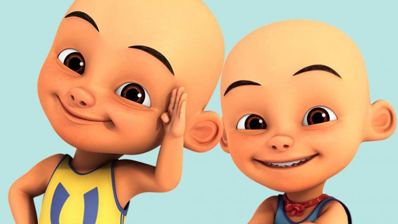

Huruf Hijaiyah

Huruf-huruf yang terdapat dalam al-qur'an
Lihat SelengkapnyaUpin dan Ipin
film kartun dari malaysia dan disukai anak-anak
Lihat SelengkapnyaSpongebob Squarepant

dia adalah seorang spon kuning dan sahabatnya bintang laut
Lihat SelengkapnyaAdit Sopo dan Jarwo

kartun ini dari Indonesia yang ditayangkan diMNCTV
Lihat SelengkapnyaAudio

adalah pemutar musik
Lihat Selengkapnya